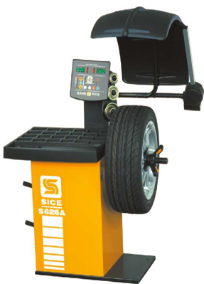
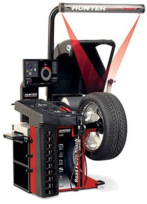
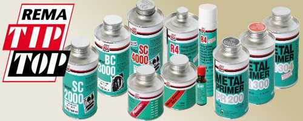

Ми надаємо послуги шиномонтажу з 2001р. за ці роки ми оволоділи та навчилися досконало замінювати шини та балансувати колеса не пошкоджуючи шину та диск. Роботу з шино монтажу здійснюємо на обладнанні SICE та HUNTER
SICE
HUNTER
Для ремонту шин використовуємо тільки матеріали TIP TOP які гарантують безпеку вашої їзди на автомобілі.
TIP TOP
